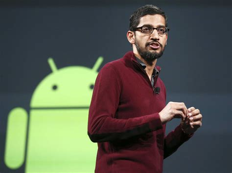

Mr. Sundar Pichai
The man who changed interaction with machines

Mr. Pichai Giving speen at an Android Convention
- He was born as Pichai Sundararajan on July 12, 1972, in Madurai, Tamil Nadu, India
- Pichai grew up in a middle-class home and was a bright student. He excelled academically at his school, Padma Seshadri Bala Bhavan, and earned a seat in the Indian Institute of Technology in Kharagpur, one of the most prestigious engineering institutions in India.
- He did his B.Tech in Metallurgical Engineering from IIT Kharagpur and then won a scholarship to study materials science and semiconductor physics from Stanford University from where he eventually earned his M.S.
- He joined Google in 2004. Initially he worked on Google’s search toolbar as a part of a small team.
- The success of Google’s toolbar gave Pichai the idea that Google should develop its own browser. Pichai persevered and convinced the co-founders of Google, Larry Page and Sergey Brin, to launch Google’s own browser. Pichai played a pivotal role in the ultimate launch of the browser, Google Chrome, in 2008.
- In 2013, Andy Rubin, the creator of Android, left to work on a different project. Larry Page then made Pichai in-charge of Android as well. His influence continued to increase and he was made the Product Chief in October 2014.
- On 10 August 2015, Sundar Pichai was named the new CEO of Google.In February 2016, he was awarded 273,328 shares of Google's holding company Alphabet, which led to a rise in his net worth. These shares were worth $199 million, and this took his holdings up to $650 million.
Here's a Timeline on Pichai's life
"Wear your failure as a badge of honor"
-Mr.Sundar Pichai
-Mr.Sundar Pichai